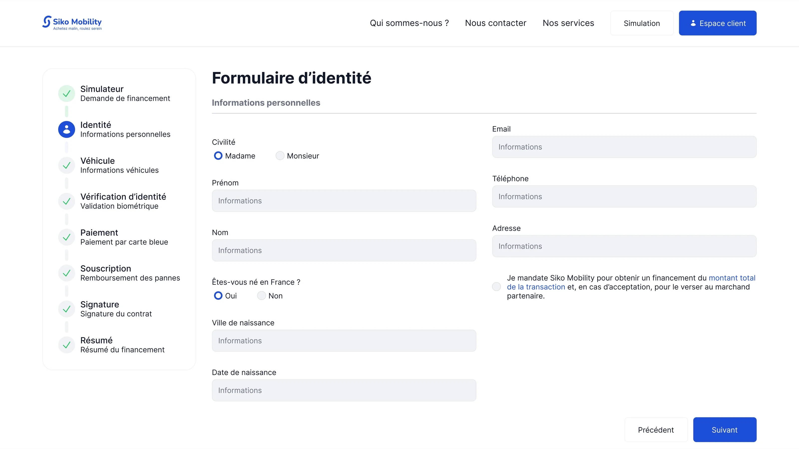

Une expérience pensée pour aller vite, sans jamais perdre l'utilisateur en route. De la simulation à la signature du contrat, chaque écran réduit les frictions d'un parcours de financement de véhicule, sur mobile comme sur desktop.
contexte.objectifs
Le produit regroupe plusieurs actions clés — simuler, s'identifier, payer, signer — dans une interface souvent consultée en déplacement. L'enjeu : raccourcir le temps d'accès à l'information et à l'action, tout en gardant une lecture claire à chaque étape.

parcours.utilisateur
Un stepper fixe découpe le parcours en huit étapes courtes. L'utilisateur sait toujours où il en est et ce qu'il lui reste à faire.
- 01Simulateur
- 02Identité
- 03Véhicule
- 04Vérification
- 05Paiement
- 06Souscription
- 07Signature
- 08Résumé


interface.design
Le travail a porté sur la hiérarchie visuelle, la simplification des formulaires et la cohérence des composants : un même système décliné du desktop au mobile, pour fluidifier les usages à une main.